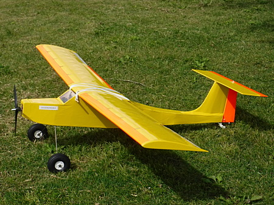

飛行日誌
NORA with HLDs（高揚力装置装備） 自作

苦労の末、完成した自作機 NORA with HLDs
| 全長 | 1000mm |
| 主翼幅 | 1360 mm |
| 翼弦長 | 220 mm |
| 全備重量 | 1090g |
| 主翼面積 | 29.9 dm2 |
| 翼面荷重 | 21.9g/dm2 |
| 主翼翼型 | Clark-Y （忠実な.....笑） |
| モ－タ－ | D2830 1300KV |
| プロペラ | 9×6×3 |
| バッテリ－ | KEYPON 3S, 2200mAh, 161g, コネクタ含む |
| サ－ボ | MG90S (13g)×6、 エレベーター・ラダー・エルロン×2・フラップ×2 |
| 受信機 | Futaba R3106GF (7.8g) |
| アンプ | 40A |
設計・製作のきっかけ
設計目標
- 400クラスモーター＋ギヤダウンユニットで飛行可能な、最も大柄な機体とする。パークプレーンクラスの小柄な機体も魅力的であるが、大きくてゆったり飛ぶ飛行機を目指す。翼幅は1400～1500mm程度。
- 翼面荷重を20.0～25.0g/dm2程度に押さえ、低速で飛行可能な機体とする。風が吹いたときには飛ばさない（飛ばせない）無風・微風時専用の機体とする。
- 初心者（自分も含めて）がある程度安心して飛ばせるような強度を有すること。極限までの軽量化は行わない。
- 本家の NORA Parkflyer ARF kit のイメージを活かした逆スケール機？ とする。特にＴ尾翼は譲れない。（笑）
- タキシング、地上滑走→離陸→タッチアンドゴーなどを楽しむため、車輪はしっかり装備する。本家のテールはソリ状になっているが、小さな尾輪を付け滑走性能を良くする。
主翼の設計・組立
尾翼の設計・組立
インターネットで調べたところ、Ｔ尾翼の利点・欠点は以下のようである。
利点
- 水平尾翼が、主翼の起こす乱流の影響を受けにくく、効率が良いので水平尾翼を小型化できる
欠点
- 垂直尾翼の強度を確保する必要がある
- リンケージが複雑になる
- 上記に伴い、重量が増加する
目標にも掲げたように、Ｔ尾翼は NORA の大きなチャームポイントなので、これを普通の尾翼にしてしまったら、ちょっと痩せたプレイリーと思われてしまう。（笑） そこで、なにがなんでも上記の欠点を克服しつつ、Ｔ尾翼を実現することにした。
まず強度の確保であるが、水平尾翼の重量を支えるため、斜め材を多く設け、上からの重量に耐えられるようにした。リンケージは、QRPのキットのようにチューブと0.8mmピアノ線によるプッシュ・プル式を採用することも考えたが、
- ○垂直尾翼の中にリンケージチューブを通す必要があり、桁でチューブの前後を挟み、その左右を薄いバルサでサンドイッチすると、重量が増えてしまう。
- ○長い距離が必要な0.8mmピアノ線の重量も気になる。
- ○さらに、エレベーターのホーンも、斜めに伸びた特殊な形状のものが必要になる。
などの点を考慮し、別の方法を考えた。京商の「スカイモード1000」などの機体では、ゴムとサーボとでエレベーターホーンを引っ張り合うことで必要な動作を実現していた。これを参考にして、
- ○エレベーターは、20cmほどの長さの0.8mmピアノ線を加工したトーションバー形式のスプリングを用い、常にダウンになるように動作させる。ゴムあるいは通常のスプリングによる引き方も考えたが、水平尾翼とエレベーターの隙間にぴったりとトーションバースプリングが収まることから、この形式とした。
- ○エレベーターホーンを水糸リンケージで引くことによりニュートラルとアップ、緩めることによりダウンの動作を実現する
- ○垂直尾翼の組立後、前縁に沿ってリンケージチューブを通すことで、垂直尾翼の製作を簡素化する
- ○ラダーはムサシノ機のように両引きの水糸リンケージとした
というエレベーターを製作した。トーションバーとチューブの分の重量増が気になるが、比較的軽量なＴ尾翼ができたと思う。

完成・テスト飛行後の考察
胴体の設計・組立
RC装置の搭載とリンケージ、重心位置の調整
フライト・インプレッション
初フライト
初墜落（泣）
河川敷での飛行後（泣）
2024/08/28
Wingtips 目次へ
サイトマップ
ホームへ
お問い合わせ